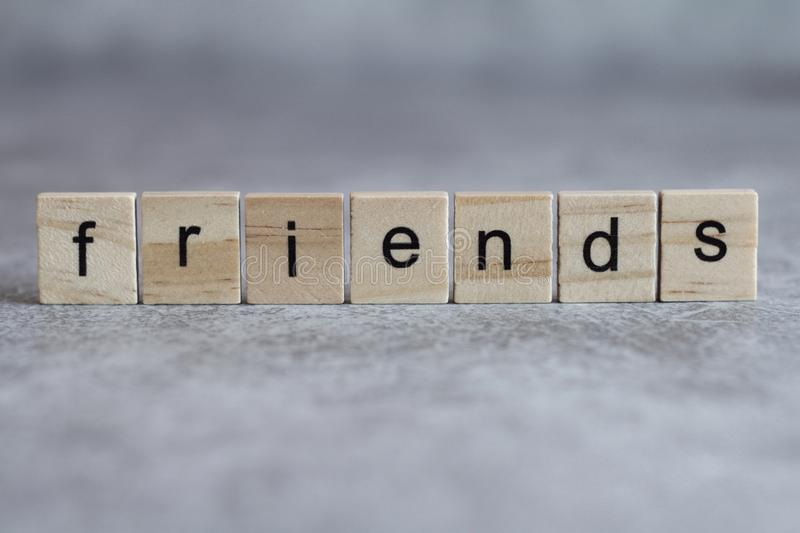

😊FRIENDS FOREVER😊
🎶A friend keeps a lot of importance in our life, and everybody enjoys the company of a friend.
👨🏿‍🤝‍👨🏿True friendship is tough to get.
ğŸ˜Through every hardship and failure, the faithful friend will stand by. They will care for you every time, and gaining a true friendship is a real present.
- SHANMUGA PRIYAN
- SABARI
- VENKATESH
- SIVASEELAN
- SUGUMARAN
- SHYAM
- VIJAY KUMAR
- MOHAN RAJ
TABLE
| NAME |
PHONE NUMBER |
ROLL NO |
NICK NAME |
| 😂SHANMUGA PRIYAN |
9345332364 |
312420106106 |
ANNA |
| 😒SABARI |
8675823213 |
312420106098 |
YEAH MAM |
| ğŸ˜VENKATESH |
6381767544 |
312420106120 |
VADAKKAN |
| 🤞VIJAY KUMAR |
9345110373 |
312420106130 |
MARLEY |
| 😉MOHAN RAJ |
9962610313 |
312420106068 |
MOHAN |

QUOTES:
-
“Friendship ... is born at the moment when one man says to another "What! You too? I thought that no one but myself . . .”
-
“A friend is someone who knows all about you and still loves you.”
-
“Good friends, good books, and a sleepy conscience: this is the ideal life.”
-
“When someone loves you, the way they talk about you is different. You feel safe and comfortable.”
-
“When we honestly ask ourselves which person in our lives mean the most to us, we often find that it is those who, instead of giving advice, solutions, or cures, have chosen rather to share our pain and touch our wounds with a warm and tender hand. The friend who can be silent with us in a moment of despair or confusion, who can stay with us in an hour of grief and bereavement, who can tolerate not knowing, not curing, not healing and face with us the reality of our powerlessness, that is a friend who cares.”
-
“You are my best friend as well as my lover, and I do not know which side of you I enjoy the most. I treasure each side, just as I have treasured our life together.”